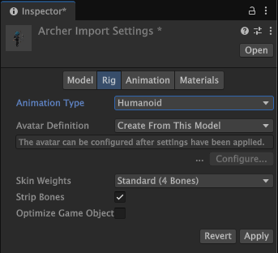
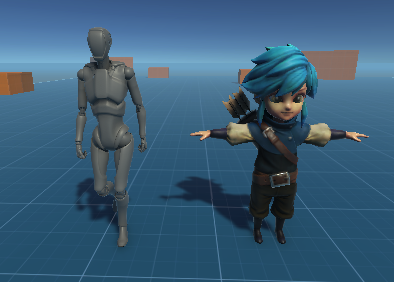

Use retargeting to apply the same animation to different humanoid models without having to restructure skeletons or rename bones. Each humanoid model must use the Humanoid animation type and have a configured AvatarAn interface for retargeting animation from one rig to another. More info
See in Glossary. A configured Avatar provides a standard hierarchy and bone names.
You might want to retarget humanoid animationAn animation using humanoid skeletons. Humanoid models generally have the same basic structure, representing the major articulate parts of the body, head and limbs. This makes it easy to map animations from one humanoid skeleton to another, allowing retargeting and inverse kinematics. More info
See in Glossary in many situations. For example, you might want to reuse the same walk animation to animate different humanoid models. You might want to dynamically swap player characters at runtime.
This topic explains how to replace an animated model with a new model. When you replace the animated model it retargets the animation to the replacement model.
To follow the steps in this topic, your project and sceneA Scene contains the environments and menus of your game. Think of each unique Scene file as a unique level. In each Scene, you place your environments, obstacles, and decorations, essentially designing and building your game in pieces. More info
See in Glossary must have the following:
To replace an animated humanoid model and retarget its animation to a new humanoid model, follow these steps:
In the Project folder, select the replacement model. The Import Settings window opens in the InspectorA Unity window that displays information about the currently selected GameObject, asset or project settings, allowing you to inspect and edit the values. More info
See in Glossary window.

Select the Rig tab.
Set Animation Type to Humanoid.
Select Apply. You must first apply before you can configure the replacement model’s avatar. This adds an Animator component to the model.
Set the Avatar Definition to Create From This Model and select Configure. This creates a new avatar based on the hierarchy and bones of the model. This places Unity in Avatar Configuration mode. When you configure an Avatar, your model must be in a T-stance. For more information on how to configure an Avatar, consult Avatar Mapping tab.
After you configure the Avatar, select Done.
From the Project folder, drag the replacement model into your scene.
Select the replacement model in the Hierarchy.
In the Inspector window, use the Transform componentA Transform component determines the Position, Rotation, and Scale of each object in the scene. Every GameObject has a Transform. More info
See in Glossary to adjust the replacement model’s starting location, rotation, and scale.

In the Animator component, select the same Animator Controller used by the old model.
In the Animator component, if the Avatar isn’t already selected, select the Avatar you configured for the destination model.
If your old model has additional components and scriptsA piece of code that allows you to create your own Components, trigger game events, modify Component properties over time and respond to user input in any way you like. More info
See in Glossary, add the same components and scripts to your replacement model. You might have to adjust property values to ensure that the retargeted animation works correctly with the replacement model.
When the replacement model functions the same as the old model, you can delete the old model from your scene.